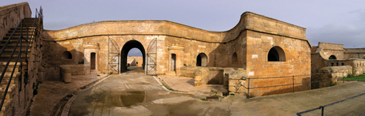

Geschichte von Menorca
 Von 902-1287, war Menorca in den Händen der Muslime. Die neue Berber Bevölkerung waren Bauern. Von Ihnen erbte Menorca ihr Bewässerungssystem und auch die Ortsnamen. Die Berber lebten in verstreuten Bauerhöfen und bearbeiteten das Land, vor allem in den Schluchten, um die Bewässerung zu nutzen. Sie bauten die Burg Santa Agueda, um Zuflucht in Falle eines Angriffs der Christen zu haben. Mit einer Festungsmauer, zwei Wassertanks und mehreren Gebäuden konnten sie so einem Angriff standhalten.
Von 902-1287, war Menorca in den Händen der Muslime. Die neue Berber Bevölkerung waren Bauern. Von Ihnen erbte Menorca ihr Bewässerungssystem und auch die Ortsnamen. Die Berber lebten in verstreuten Bauerhöfen und bearbeiteten das Land, vor allem in den Schluchten, um die Bewässerung zu nutzen. Sie bauten die Burg Santa Agueda, um Zuflucht in Falle eines Angriffs der Christen zu haben. Mit einer Festungsmauer, zwei Wassertanks und mehreren Gebäuden konnten sie so einem Angriff standhalten.
Menorca wechselt die Führung, als 1295 Alfonso III der Liberale die Berber vertrieb. Die Insel kehrt zurück in die christliche Welt. Im Jahre 1295, durch den Vertrag den Anagni, gehört Menorca wieder Jaume II, König des Königreiches von Mallorca und Onkel von Alfonso III. Der Gesetzgeber für das neue menorquinische Volk ist also Jaume II. Am 30. August 1301 ist die Verkündung der neuen Verfassung, die die Regelung der sozialen Struktur, die politische,wirtschaftliche und städtebauliche Entwicklung der Insel ordnen soll. Dieses Dokument war die erste wirkliche Verfassung für die Menorquiner. Dieses und weitere wichtige Dokumente wurden gesammelt und in das Llibre Vermell gebunden, was heute in Ciutadell aufbewahrt wird.
Das zweite wichtige Dokument von Jaume II am 19. März 1301 war das Pariatge. Hier wurde kirchliche Teilung der Insel bestimmt und auch die Ernennung 7 verschiedener Gemeinden, die schon ein wenig vorhanden waren. Auf Menorca wurde Jahrhunderte lang Getreide und hochwertige Wolle produziert, die dann wiederum in Mallorca, Barcelona und Italien vertrieben wurde. Auch Schafskäse wurde viel hergestellt. So nahmen die kleinen Unternehmen ihren Lauf.
 Im vierzehnten Jahrhundert gab es schon das erste Rathaus, in Ciutadella, das schnell erweitert wurde durch das aktuelle Consell Insular de Menorca. Im Jahre 1439 führt der Gouverneur Requensens Galcerán das Wahlsystem ein, und bittet um Auslosung und Verteilung der jeweiligen Ämter die zu besetzen sind. Dieses kommunale System wird bis zum neunzehnten Jahrhundert fort geführt. Zu diesem Zeitpunkt wird die Insel mit vielen Bauern und auch Handwerkern besiedelt, die Hauptstadt ist damals Ciutadella. Zwischen dem fünfzehnten und siebzehnten Jahrhunderts, leidet Menorca unter den Angriffen von Piraten. Sie zeichnen sich durch ihre undendliche Grausamkeit aus, die schlimmsten Angriffe waren wohl auf Mahon im Jahre 1535 durch Barbarossa und der 1558 auf Ciutadella vom Anführen Ali Mustafa Pi, die die Bevölkerung auf Menorca dezimierten. Die Antwort darauf kam, die Talayas (Aussichtstürme) in Mahon und Ciutadella die extra für die Überwachung gebaut wurden. Die Stadtmauern wurden verstärkt und die beiden Festungen “San Felipe” und “Sant Antoni” wurden gebaut um die Insel zu verteidigen.
Im vierzehnten Jahrhundert gab es schon das erste Rathaus, in Ciutadella, das schnell erweitert wurde durch das aktuelle Consell Insular de Menorca. Im Jahre 1439 führt der Gouverneur Requensens Galcerán das Wahlsystem ein, und bittet um Auslosung und Verteilung der jeweiligen Ämter die zu besetzen sind. Dieses kommunale System wird bis zum neunzehnten Jahrhundert fort geführt. Zu diesem Zeitpunkt wird die Insel mit vielen Bauern und auch Handwerkern besiedelt, die Hauptstadt ist damals Ciutadella. Zwischen dem fünfzehnten und siebzehnten Jahrhunderts, leidet Menorca unter den Angriffen von Piraten. Sie zeichnen sich durch ihre undendliche Grausamkeit aus, die schlimmsten Angriffe waren wohl auf Mahon im Jahre 1535 durch Barbarossa und der 1558 auf Ciutadella vom Anführen Ali Mustafa Pi, die die Bevölkerung auf Menorca dezimierten. Die Antwort darauf kam, die Talayas (Aussichtstürme) in Mahon und Ciutadella die extra für die Überwachung gebaut wurden. Die Stadtmauern wurden verstärkt und die beiden Festungen “San Felipe” und “Sant Antoni” wurden gebaut um die Insel zu verteidigen.
Die Menorquiner haben sehr religiöse Wurzeln, was man auch an dem von ihrem Festtagen gespikten Kalender sehen kann. Es gibt viele religiöse und auch traditionelle Festtage die hier gefeiert werden, bei denen meistens die Pferde und ihre besonderen Aufführungen, im Mittelpunkt stehen.
Die politischen Entscheidungen der Insel wurden damals im Rathaus von Ciutadella getroffen, was sich aber ändert als sich Mahon(1640), Mercadal und Alayor (1651) administrativ unabhängig machten. Seid dem verwaltet jede Gemeinde ihre eigenen Steuereinkünfte und Subventionen.
Die aktuelle Landschaft von Menorca ist das Produkt jahrhundert langer Feldarbeit der Bauern. Seid 1287 wird das Land von den Bauern bearbeitet. Die bekannten Herren ihrer Ländereien bekamen somit einen jährlichen Abschlag von dem sie gut leben konnten. Im späten siebzehnten Jahrhundert verliehren viele Grundbesitzer an wirtschaftlicher Leistungsfähigkeit und es wurde das System der Halbpacht (amitgeria) eingeführt. Die Felder produzieren Getreide (hauptsächlich Weizen), Trauben, Kartoffeln und Gemüse. Das achtzehnte Jahrhundert führt Menorca in eine turbulente Zeit. Die strategische Lage mit dem Hafen von Mahon wecken immer mehr das Interesse der europäischen Mächte. Als Ergebnis des 1713 herrschenden Erbfolgekriegs fiel Menorca in britische Hände. Ab diesem Zeitpunkt war Menorca, wie ein Spielzeug, abwechselnt kontrolliet von spanischen, englischen und auch französischen Einheiten.
Die britische Herrschaft (1713-1756, 1763-1782, 1798-1802) hinterlässt die Festungstürme, die Befestigung der Burg von San Felipe, sie bauten Fort Marlborough, das Krankenhaus auf der Königsinsel im Hafen von Mahon, das Wasserdepot in Mercadal, den Weg Cami den Kane, es wurde 1771 die Stadt Es Castell gegründet und Gouverneur Kane ernennt Mahon als Hauptstadt von Menorca. Die französische Herrschaft war kurz (1756-1763) und unterstreicht die Grundlage des Örtchens San Luis.
Die wirtschaftiche Lage verbesser sich durch den Handel, den Schiffsbau im Hafen von Mahon und durch die Anwesenheit des grossen Militärkontingents. Im Jahre 1745 wird das Dorf Es Migjorn gegründet und zwei weitere Jahrzehnte später, 1768, wanderten 1400 Menorquiner nach Florida aus.
Das neuzehnte Jahrhundert war eine Zeit der Gegensätze. Zunächst verlief die wirtschaftliche Dynamik des vergangenen Jahrunderts weiter, bis durch eine neue Gesetzgebung aus Madrid der freie Handel mit Getreide verboten wird. Der Schiffsbau verschwindet fast komplett von Menorca und die Weinproduktion ist auch rückläufig. Zwischen 1830 und 1855 litt die Insel unter einer starken Migration der Menorquiner, die nach Algerien auswanderten.
Gestärkt durch die Franzosen die ihre Kolonie dort vermehren wollten. 10.000 Menorquiner, ein Viertel der Bevölkerung, hat sich damals im neuen Eldorado niedergelassen und Algerien wurde zu einem kleinen Menorca in Nordafrika. In der zweiten Hälfte des neunzehnten Jahrhunderts und dem ersten drittel des zwanzigsten Jahrhunderts verbesserte sich die wirtschaftliche Lage auf Menorca. Die Viehwirtschaft wurde angetrieben und es wurde von nun an der sehr spezielle Käse produziert, der später international bekannt wurde.
Dank des Interesses von Cuba und Puerto Rico erhöhte sich auch der Export, der auf Menorca gefertigten Schuhe. Die Schuhe die Weltweit bekannt sind für ihre Qualität und das Design, das von den professionellen Schuhmachern hier erarbeitet wird. Im frühen zwanzigsten Jahrhundert ist Menorca, zusammen mit Mallorca, auch der wichtigste Produzent von Silber- und Goldgeldbörsen, die Avantgarde der europäischen Mode. Tausende Frauen arbeiten in den Fabriken an ihren Herstellung. Als der Ruhm aber verfliegt, konzentrieren sich die Fabriken auf die Herstellung hochwertigen Modeschmucks, die einzige Fertigung in ganz Spanien.
Im Laufe des zwanzigsten Jahrhunderts festigt sich die die Produktion von Käse, Schmuck und Schuhen. Erst in den sechziger jahren kommt es endgültig zum Durchbruch der Tourismusbranche. Mit dem Bau der ersten Touristenörtchen und dem Bau der ersten Hotels.
Die Erklärung zum Biosphärenreservat am 7. Oktober 1993 und die Abstimmung über den Gebietsplan waren zwei wichtige Fakten die Menorca in ihrer Identität gestärkt hat und sich verpflichtet hat diesen Schatz auch in Zukunft zu wahren. Heute ist man daran die verschiedenen Ausgrabungsstätten, von der UNESCO zum Weltkulturerbe zu erklären. Es gibt auf Menorca mehr als 1.400 archäologische Stätten aus der talayotischen Zeit, die Sie auf nicht mal 700 Quadratkilometern entdecken können.
Menorca ist die perfekte Insel, um seine Gastronomie, die speziellen Handwerke und das kulturelle Erbe zu geniessen. Seine Geschichte und seine Menschen, dazu die Landschaft und die Ruhe laden ein uns kennen zu lernen und eine schöne Zeit zu verbringen. Geniessen Sie es.